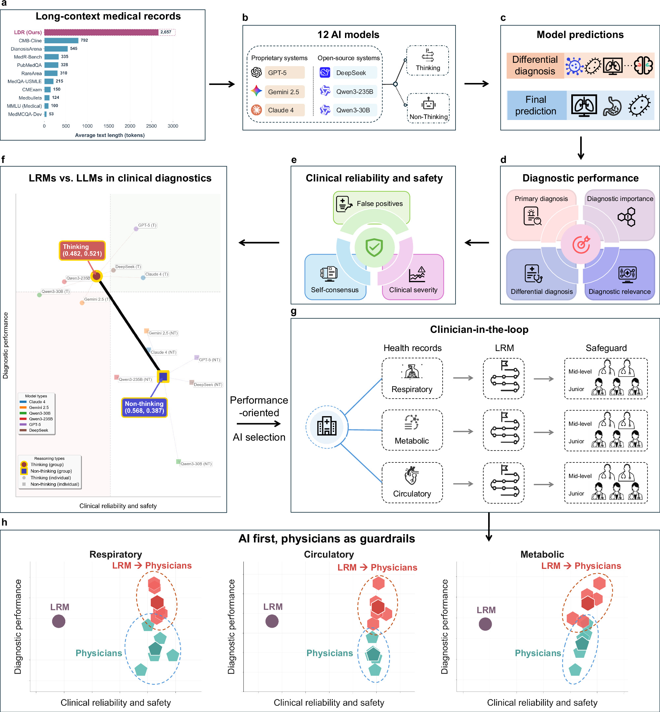
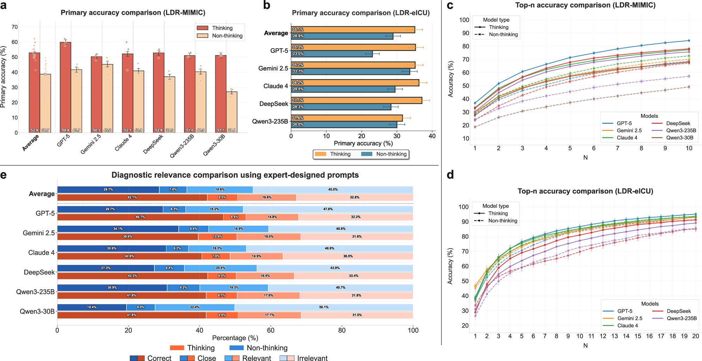
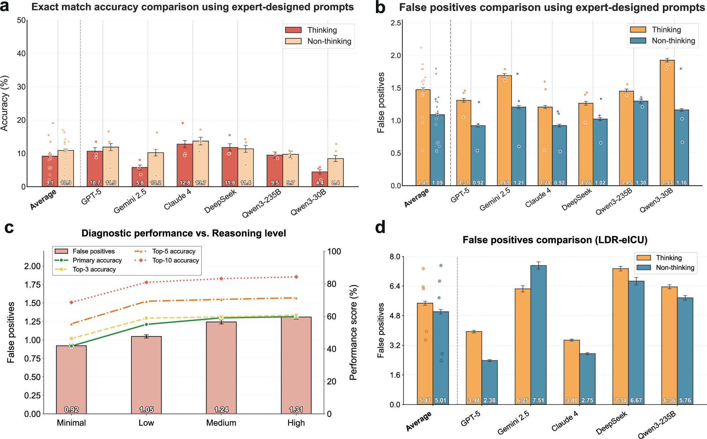
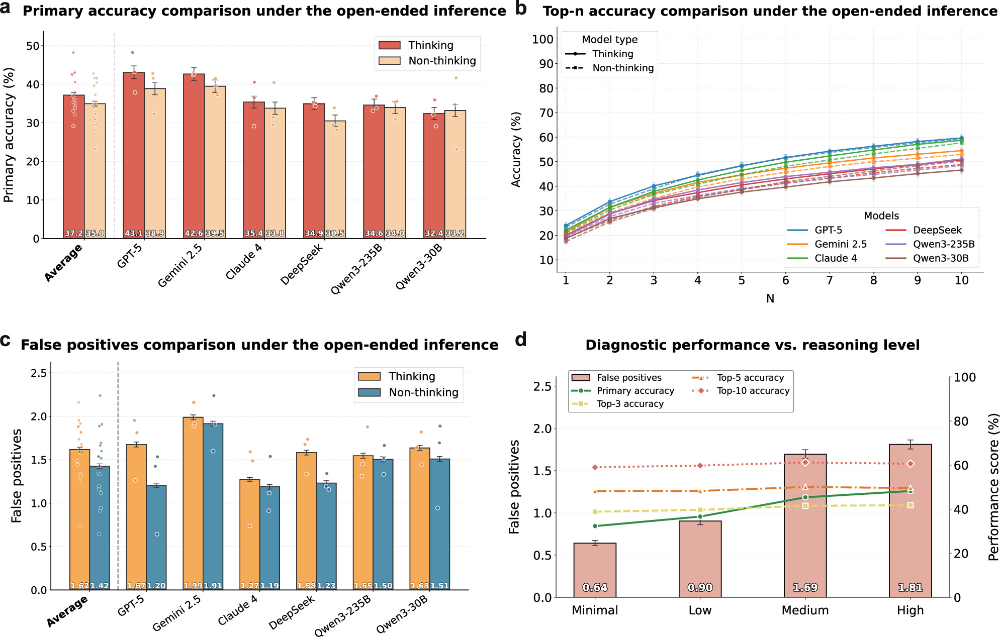
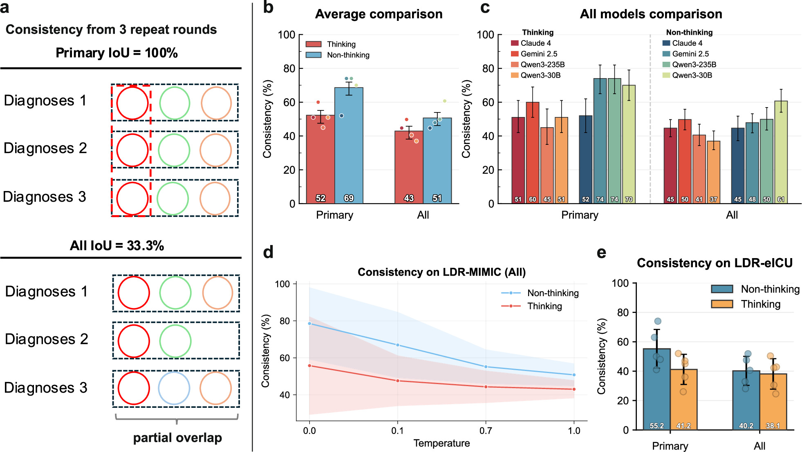
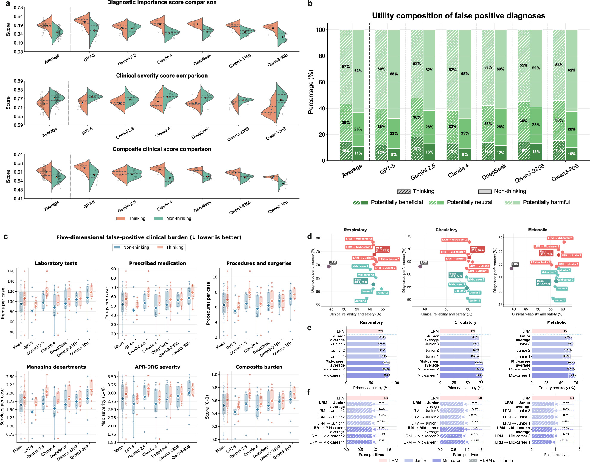

论文资料
The accuracy-safety trade-off of large reasoning models in clinical diagnostics.
已取得公开摘要，图文解读尚未完成
已取得公开摘要，图文解读尚未完成。取得完整资料并通过核验后，这个地址会更新为图文解读。
公开摘要
Large reasoning models (LRMs) offer potential advantages for clinical diagnosis over standard large language models (LLMs), yet their utility and safety remain unclear. Here we show, on AIMS-LDR, a long-context diagnostic reasoning benchmark built upon real-world electronic health records, covering six matched model pairs and 12 specialties, that LRMs generate over 34% more false positive diagnoses and show approximately 40% lower reproducibility than their LLM counterparts, while making more accurate primary diagnoses and more clinically relevant differentials. Experiments confirm this trade-off across prompt designs, model hyperparameters, and evaluation paradigms. A structured collaboration model, in which the LRM broadens diagnostic coverage and the clinician verifies reliability, increases diagnostic accuracy by 20% and reduces false positives by 44% in a 15-physician validation study. These results, obtained under controlled retrospective conditions, suggest that pairing LRM reasoning with physician oversight may support safer and more accurate diagnostic decision-making, warranting prospective validation before clinical deployment.
原图未改动。以下图注来自标注的来源，不据此补写摘要未报告的实验结论。
已取得的论文原图


原文图注与出处
a Comparison of average text length across medical datasets, measured in tokens. Our Long-context Diagnostic Reasoning (LDR) dataset (combination of LDR-MIMIC and LDR-eICU) exhibits the longest average text length with 2657 tokens. b Evaluation setup with 12 modes across six AI models, each tested in thinking (LRM) and non-thinking (LLM) modes. c Model outputs include a top-10 differential diagnosis list and the final prediction. d Diagnostic performance assessed by four metrics: primary diagnosis, diagnostic importance, differential diagnosis, and diagnostic relevance. e Clinical reliability and safety evaluated by false positives, self-consensus, and clinical severity. f Comparative analysis of LRMs and LLMs on (i) diagnostic performance (mean of metrics in d ) and (ii) clinical reliability and safety (mean of metrics in e ). T and NT denote thinking and non-thinking modes, respectively. g Clinician-in-the-loop evaluation: patient records from respiratory, metabolic, and circulatory domains are processed by the top LRM and verified by expert clinicians (mid-level and junior). h The “AI first, physicians as guardrails” strategy improves diagnostic accuracy, clinical reliability, and safety across respiratory, circulatory, and metabolic domains. 119894.
Wu, Shuai et al.
原文图页 · CC BY-NC-ND 4.0

原文图注与出处
a Primary accuracy on the LDR-MIMIC dataset ( n = 1,157 samples). b Primary accuracy on the LDR-eICU dataset ( n = 1821 samples). c Top- n accuracy on the LDR-MIMIC dataset. d Top- n accuracy on the LDR-eICU dataset. e Diagnostic relevance of model predictions on the LDR-MIMIC dataset, classified using the ICD-9 hierarchy as correct, close, relevant or irrelevant. Correct indicates an exact match with the ground-truth disease code; close indicates a match at the three-digit ICD-9 code level; relevant indicates a match within the same major ICD-9 chapter or organ system; and irrelevant indicates no match at any of these levels. For each model, points and bars represent mean performance across cases, with error bars showing mean values ± bootstrap 95% confidence intervals. The average bar represents the mean value across evaluable models for each mode. Qwen3-30B was excluded from LDR-eICU analyses because of a large number of unevaluable predictions.
Wu, Shuai et al.
原文图页 · CC BY-NC-ND 4.0

原文图注与出处
a Exact match accuracy of each model on the LDR-MIMIC dataset. b false positives (mean number of false positive diseases per case) on the LDR-MIMIC dataset. c Diagnostic performance and false positives of GPT-5 across increasing reasoning strengths. d false positives comparison on the LDR-eICU dataset. a–c use the LDR-MIMIC cohort ( n = 1157 samples); d uses the LDR-eICU cohort ( n = 1821 samples). For each model or reasoning-strength setting, bars represent mean values across cases, with error bars showing mean values ± bootstrap 95% confidence intervals. The average bar represents the mean value across evaluable models for each mode. Qwen3-30B was excluded from LDR-eICU due to a large number of unevaluable predictions.
Wu, Shuai et al.
原文图页 · CC BY-NC-ND 4.0

原文图注与出处
Six matched model pairs were evaluated on the full LDR-MIMIC cohort ( n = 1,157 samples) using a two-stage open-ended framework (Stage 1: free-text diagnosis without any candidate list; Stage 2: post-hoc mapping to the 40 ICD-9 codes for evaluation), under expert-designed prompts (strict/standard/conservative). a Primary accuracy. b Top- n accuracy ( n = 1–10). c False positives. d GPT-5 performance and false positives under varying reasoning effort (minimal/low/medium/high). For each model or reasoning-effort setting, points and bars represent mean values across cases, with error bars showing mean values ±bootstrap 95% confidence intervals.
Wu, Shuai et al.
原文图页 · CC BY-NC-ND 4.0已取得的论文原图


原文图注与出处
a Self-consensus analysis methodology: three repeated inferences per case under identical inputs. Primary consistency reflects the proportion of cases with identical primary diagnoses across all runs; all consistency denotes the mean Intersection-over-Union (IoU) of all predicted diagnoses. b Comparison of average consistency scores for the thinking and non-thinking modes across all models. c Comparison of consistency scores for each individual model, comparing their thinking and non-thinking modes. d All consistency across inference temperatures on the LDR-MIMIC dataset. e Comparison of primary and all consistency scores on the LDR-eICU dataset. b–d use 100 randomly selected LDR-MIMIC samples; e uses 100 randomly selected LDR-eICU samples. For ( b ) and ( c ), bars represent mean consistency across cases, with error bars showing mean values ± bootstrap 95% confidence intervals. In panel d, shaded regions indicate standard deviation across models. In ( e ), bars represent mean values across evaluable models, dots represent individual models, and error bars indicate standard deviation.
Wu, Shuai et al.
原文图页 · CC BY-NC-ND 4.0

原文图注与出处
a Distributions of diagnostic importance scores, clinical severity scores and composite clinical scores across all models and nine prompt designs on the LDR-MIMIC cohort ( n = 1157 samples). The average denotes the mean score of the six models. b Utility composition of false-positive diagnoses on the LDR-MIMIC cohort ( n = 1157 samples), categorized as potentially beneficial, potentially neutral or potentially harmful. c Five-dimensional false-positive clinical burden on the LDR-MIMIC cohort ( n = 1157 samples), including laboratory tests, prescribed medication, procedures and surgeries, managing departments, All Patient Refined Diagnosis-Related Groups (APR-DRG) severity and the composite burden index. For box plots in c1–c6, the center line represents the median, boxes indicate the interquartile range (IQR), whiskers extend to 1.5×IQR, and individual points represent cases. d Diagnostic performance versus clinical reliability and safety in the physician-oversight study. e Primary accuracy of clinicians with and without LRM assistance. f False positives after clinician oversight of LRM outputs. d–f include 50 cases from each of three disease categories (respiratory, circulatory, and metabolic) and 15 physicians in total, with five physicians per category.
Wu, Shuai et al.
原文图页 · CC BY-NC-ND 4.0